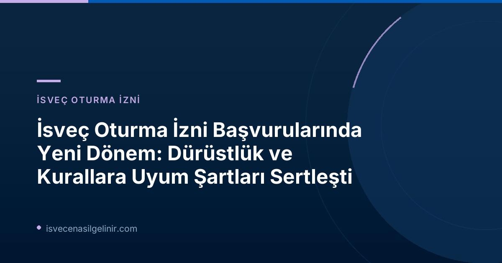

Yeni Yönetmelik Ne Anlama Geliyor?
İsveç’in göçmenlik politikalarında yapılan son değişiklikler, ülkeye gelmek veya kalmak isteyen herkes için "vandel" kavramının önemini artırıyor. Eskiden, oturma izni başvurularında genellikle adli sicil kayıtları kontrol edilirken, yeni düzenlemelerle birlikte Migrationsverket, bir kişinin suç işlemiş olmasının yanı sıra, "toplumun sürdürmeye çalıştığı kurallara aykırı davranışlar sergilemesi" durumunda da harekete geçme yetkisine sahip.
Migrationsverket'in "suistimali tespit etme ve önleme" çabalarının liderliğini yürüten Oskar Ekblad'ın belirttiği gibi: "Eksik vandel, mutlaka suç teşkil etmeyen, ancak toplumun korumaya çalıştığı kuralları ihlal ettiği düşünülen eylemleri içerir. Migrationsverket'in artık eksik vandel nedeniyle oturma izinlerini reddetme ve iptal etme yetkisi bulunmaktadır." Bu, bireylerin yasalara ve toplumsal normlara uyum konusundaki sorumluluklarının arttığı anlamına geliyor.
"Vandel" Nedir ve Migrationsverket Vandel'i Nasıl Değerlendiriyor?
"Vandel" kelimesi, bir kişinin genel hal ve davranışlarını, dürüstlüğünü ve kurallara uyumunu ifade eden bir kavramdır. Yeni düzenlemelerle birlikte Migrationsverket, bir oturma izni başvurusu aldığında, başvuru sahibinin yasalara ve toplumsal kurallara ne ölçüde riayet ettiğine dair kapsamlı bir değerlendirme yapacak. Bu değerlendirme, sadece adli sicil kayıtlarını değil, aynı zamanda diğer kamu kurumlarından toplanan verileri de içerebilir.
Vandel Kavramı ve Değerlendirme Kriterleri
- Tanım: Bir kişinin dürüstlüğü, iyi hali ve kurallara uyumu.
- Kapsam: Sadece suçları değil, yasal olmasa bile toplumsal kurallara aykırı davranışları da içerir.
- Örnekler: Sürekli olarak kuralları ihlal etme, yanlış bilgi verme, dürüst olmayan yollarla geçimini sağlama veya organize suç ağlarıyla ilişki içinde olma.
Değerlendirme Süreci Nasıl İşleyecek?
Migrationsverket, başvuru sahibinin kural ihlallerini ve iyi hal eksikliklerini değerlendirirken, kapsamlı bir inceleme yapacaktır. Bu inceleme kapsamında:
- Kurumlar Arası Bilgi Paylaşımı: Ödeme emirleri (betalningsförelägganden) ile ilgili bilgiler veya geçim desteği, sosyal sigortalar ve diğer sosyal yardımlar için sunulan bilgiler gibi veriler, diğer kamu kurumlarından talep edilebilir.
- Tekil Olaylar ve Tekrarlayan Davranışlar: Küçük ve tek seferlik uygunsuzluklar genellikle ret nedeni olmayacakken, tekrarlayan ve süreklilik arz eden davranışlar değerlendirme üzerinde önemli bir etkiye sahip olacaktır.
- Motivasyon ve Hukuki İlkeler: Bir başvurunun reddi veya oturma izninin iptali kararı, idare hukukunun yasalara uygunluk, objektiflik ve tarafsızlık gibi temel ilkelerine uygun, iyi gerekçelendirilmiş olmalıdır.
- Orantılılık İlkesi: Bireyin oturma izni alma hakları ile toplumun dürüst vatandaşlara sahip olma menfaati orantılı bir şekilde değerlendirilecektir. İsveç Vatandaşlık Sınavı hazırlık sürecinde bu tür yasal değişiklikleri anlamak, uzun vadeli planlarınız için hayati önem taşır.
Bireysel İnceleme ve Kapsamın Dışında Kalan Durumlar
Her vaka, kendi özel koşullarına ve oturma izninin dayandığı yasalara göre bireysel olarak değerlendirilecektir. Bu, her durumun tek tek ele alınacağı ve genel bir kuralın körü körüne uygulanmayacağı anlamına gelir. Ancak, yeni ve sıkılaştırılmış vandel kriterlerinin uygulanmadığı belirli durumlar da bulunmaktadır:
| Kriterler Kimler İçin Geçerli? | Kriterler Kimler İçin Geçerli Değil? |
|---|---|
| AB hukuku dışındaki mevzuata dayanan oturma izinleri (genel olarak). | Uluslararası koruma (sığınma) arayanların oturma izni başvuruları. |
| AB hukukuna dayalı oturma izinleri (örneğin çalışma, eğitim, aile birleşimi amaçlı özel AB direktifleri kapsamındaki başvurular). |
Bu, özellikle uluslararası koruma statüsü arayan veya AB hukukunun koruması altında İsveç'e gelmek isteyen kişiler için önemli bir ayrım teşkil etmektedir.
İsveç'te Oturma İzni Başvuru Sahipleri İçin Tavsiyeler
Bu yeni ve sıkılaştırılmış kurallar ışığında, İsveç'te oturma izni başvurusu yapmayı düşünen veya mevcut iznini uzatacak kişilerin dikkat etmesi gereken bazı önemli noktalar bulunmaktadır:
- Dürüst ve Şeffaf Olun: Başvurunuzda sunduğunuz tüm bilgilerin doğru ve eksiksiz olduğundan emin olun. Yanlış veya yanıltıcı bilgi vermek, başvurunuzun reddedilme veya mevcut izninizin iptal edilme riskini taşır.
- Yasalara ve Kurallara Uyun: İsveç'teki yaşamınız boyunca yasalara ve toplumsal kurallara azami özen gösterin. Trafik kurallarından vergi yükümlülüklerine, sosyal yardımlardan elde edilen gelirlere kadar her alanda kurallara uyum esastır.
- Mali Durumunuza Özen Gösterin: Ödeme emirleri (krediler, borçlar vb.) konusundaki yükümlülüklerinizi zamanında yerine getirin. Mali düzensizlikler, "vandel" değerlendirmesinde olumsuz bir faktör olarak ele alınabilir.
- Sosyal Yardımlar ve Beyanlar: Sosyal yardımlar veya sigorta hakları için yaptığınız başvurularda verdiğiniz bilgilerin doğruluğundan emin olun. Yanlış beyanlar ciddi sonuçlar doğurabilir.
- Profesyonel Destek Alın: Başvuru sürecinde herhangi bir şüpheniz veya karmaşık bir durumunuz varsa, bir göçmenlik danışmanından veya avukatından destek almak en sağlıklısı olacaktır. Bu, başvurunuzu hatasız yapmanıza ve olası riskleri en aza indirmenize yardımcı olur.
Sıkça Sorulan Sorular (SSS)
Soru 1: Küçük bir kural ihlali bile oturma iznimi kaybetmeme neden olabilir mi?
Cevap 1: Hayır, Migrationsverket'in duyurusuna göre, "tekil ve daha az ciddi uygunsuzluklar" genellikle ret veya iptal nedeni olmayacaktır. Ancak, bu tür davranışların tekrarlanması veya ciddi boyutlara ulaşması durumunda değerlendirmeyi etkileyebilir.
Soru 2: Sığınmacılar bu yeni düzenlemelerden etkileniyor mu?
Cevap 2: Hayır, uluslararası koruma statüsü (sığınma) başvurusunda bulunanlar veya bu temelde oturma izni alanlar, bu yeni ve sıkılaştırılmış vandel kriterlerinin kapsamı dışında tutulmuştur.
Soru 3: Migrationsverket hangi tür bilgilere erişebilir?
Cevap 3: Migrationsverket, başvuru sahibinin dürüstlük ve kurallara uyumunu değerlendirmek amacıyla, diğer kamu kurumlarından ödeme emirleri, geçim desteği, sosyal sigortalar ve diğer sosyal yardımlarla ilgili sunduğu bilgiler hakkında veri toplayabilir.
Soru 4: Eğer başvurum vandel eksikliği nedeniyle reddedilirse ne yapabilirim?
Cevap 4: Migrationsverket'in kararları, idare hukukunun temel ilkelerine uygun ve iyi gerekçelendirilmiş olmalıdır. Bir ret kararına karşı itiraz veya temyiz yolu bulunmaktadır. Bu durumda yasal yardım almanız önemlidir.
Referanslar:
İsveç'e Göç Yolculuğunuzda Yanınızdayız!
İsveç'te oturma izni, çalışma izni veya vatandaşlık süreçleri hakkında güncel ve doğru bilgilere ulaşmak için sitemizi ziyaret edin. Profesyonel danışmanlık hizmetlerimizle başvurularınızı hatasız yapın.